Pagina Inicial

Sales Advisor Based on Business intelligence
 Sabbi, es una aplicación para el manejo de la información de sus clientes, productos y ventas de su tienda en linea. Ya no hay necesidad de usar el computador
todo se puede manejar desde el celular.
Sabbi, es una aplicación para el manejo de la información de sus clientes, productos y ventas de su tienda en linea. Ya no hay necesidad de usar el computador
todo se puede manejar desde el celular.
Para interactuar en la aplicación en el boton izquierdo, encontrara los modulos de la aplicación. Tambien encontrara un manual en la sección "Manual de usuario"